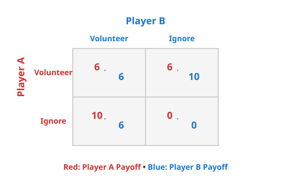
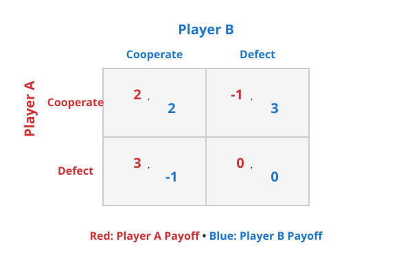

Game theory: A quick introduction
I have recently read a book called “Game Theory in Everyday Life” by Len Fisher. It is a great book that explains concepts of game theory in a simple and easy to understand way. It opens up a new perspective on how to look into familiar situations.
Let’s start with a very usual story from our software engineering work.
A Flaky CI Test
You submit a PR.
Most checks pass, but one CI job fails: some unrelated test.
You re-run it. Green. A classic flaky test.
What would you do?
- Re-run the test, merge the PR, and move on.
- Spend time debugging and fixing the flaky test to save others from future pain.
Most engineers choose the first option.
Everyone agrees flaky tests are bad.
They waste time, drain attention, and erode trust in CI.
Yet they persist.
Not because engineers are careless, but because fixing them is rarely the rational choice in that moment.
This is not to blame the engineers. It is a situation of game theory.
The Volunteer’s Dilemma
The CI situation is an example of the Volunteer’s Dilemma.
The structure is simple:
- Everyone benefits if someone fixes the flaky test.
- Fixing the test is costly (time, context switching).
- The benefit of fixing is shared by everyone.
- If no one volunteers, everyone suffers.
The optimal outcome is clear: exactly one person fixes the test.
But from each individual’s perspective:
- If someone else fixes it, I benefit without paying the cost.
- If no one fixes it, my fixing will cost me time, and no one even know that I did.
From each individual’s point of view, it’s better to do nothing than fix the flaky test.
Because of this, everyone waits for someone else to do it.
The result is stable, predictable, and bad for everyone.
Why This Outcome Is Stable
This stability is what game theory calls a Nash equilibrium:
a situation where no individual can improve their outcome by changing their strategy alone.
In the CI case:
- If you alone decide to fix the flaky test, you incur a cost while others benefit.
- If you don’t fix it, you suffer no immediate penalty.
So “do nothing” becomes the default behavior, not because people agree on it, but because no one has good reason to be the one who takes the cost.
This is the key insight:
Bad outcomes can emerge even when everyone understands the problem and agrees on the solution.
Visualizing the Game
The diagram below shows the payoff matrix for this game.
Each cell shows the outcomes when players choose their strategies:
- Rows represent Player A’s choices (red)
- Columns represent Player B’s choices (blue)
- Numbers show each player’s payoff (red for A, blue for B)
For example, if Player A chooses “Ignore” and Player B chooses “Volunteer”, Player A gets 10 (free-riding on B’s work) and Player B gets 6 (paid the cost but problem is solved).

The classic game: The Prisoner’s Dilemma
The Prisoner’s Dilemma is probably the most well-known game in game theory. It appears in almost every introductory book, often as the first example.
Let’s look at a simple variant of the game that’s easier to reason about.
A Coin Machine Game
You and another player stand in front of a machine.
Each of you has two choices:
- If you put a coin into the machine, the other player receives 3 coins.
- If you do not put a coin in, the other player receives nothing.
You both choose at the same time, and you don’t know what the other player will do.
Your goal is simple: get as many coins as possible.
What should you do?
Let’s think through the possibilities.
- If both of you put a coin in, you each give up 1 coin and receive 3 coins from the other. You end up with +2 coins.
- If you put a coin in but the other player doesn’t, you lose 1 coin and get nothing back. You end up with –1 coin.
- If you don’t put a coin in but the other player does, you gain 3 coins without paying anything. You end up with +3 coins.
- If neither of you puts a coin in, nothing happens. You end up with 0 coins.
The payoff matrix below shows how each combination of choices plays out. Remember: red numbers are Player A’s payoffs, blue numbers are Player B’s.

Now look at the decision from your perspective.
- If the other player puts a coin in, you are better off not putting one in (+3 instead of +2).
- If the other player does not put a coin in, you are still better off not putting one in (0 instead of –1).
So no matter what the other player does, the rational choice is the same:
Do not put a coin in the machine.
The Paradox
If both players reason this way, neither puts in a coin, and both walk away with nothing.
Yet both would have been better off if both had put a coin in.
This is the core of the Prisoner’s Dilemma.
Each player makes a rational decision based on their own incentives, but the outcome is worse for everyone.
The Nash Equilibrium
This outcome, where neither player puts in a coin, is a Nash equilibrium.
Once both players choose not to cooperate, no single player can improve their result by changing their choice alone. The situation is stable, even though it is clearly not optimal.
The Core Structure
There are many variants of the Prisoner’s Dilemma, but they all share the same structure:
- Each player has a dominant strategy (defect).
- Mutual defection is a Nash equilibrium.
- Mutual cooperation would make everyone better off.
- Rational individual choices lead to a collectively worse outcome.
And this structure appears in many real-life situations, especially in business competition:
- price wars between competitors,
- advertising arms races,
- companies cutting corners on quality,
- doping in professional sports.
In all these cases, “defecting” is the safer local choice, even though everyone ends up worse off.
More games
So far, we have explored the Volunteer’s Dilemma and the Prisoner’s Dilemma.
There are many other games in game theory, which can help us understand different situations in everyday life.
Game of Chicken
Two drivers are on a narrow road, driving straight toward each other.
Each driver has two choices:
- Swerve to the side
- Keep going straight
They make their choices at the same time.
Let’s look at the outcomes:
- If one driver swerves and the other keeps going, the one who keeps going wins. They look brave. The other looks like a “chicken.”
- If both drivers swerve, no one crashes. Both avoid danger, but neither wins.
- If neither driver swerves, they crash. This is the worst outcome for both.
Now think from each driver’s point of view.
You want the other driver to swerve. But if both of you think that way, disaster happens.
This is the Game of Chicken.
In real life, this game appears in more devastating forms when two countries threaten each other with military force:
- Each country increases pressure: moving troops, testing weapons, or making stronger statements, hoping the other side will back down first.
- Backing down looks weak, so neither side wants to do it.
- If one country steps back, the other gains an advantage.
- But if neither steps back, the situation can spiral into a war that neither side actually wants.
The tragedy of the commons
Think about a public park in your region.
- Most people throw their trash into the bins.
- One day, someone leaves a plastic bottle on the grass, “It’s just a bottle”. The park still looks clean.
- Another person sees the bottle and thinks, “One more piece won’t matter”, and leaves their trash too.
- Soon, a few more people do the same.
- Over time, the grass is covered with waste. Everyone loses a place they once enjoyed.
No single person ruined the park.
Each person made a small, reasonable decision.
But when many people acted the same way, the shared space was slowly destroyed.
Free-rider
Imagine a shared office kitchen.
- Everyone enjoys having clean dishes and a tidy space.
- Cleaning the kitchen takes time and effort.
- If others clean, you can enjoy the kitchen without doing anything.
At first, a few people clean regularly.
Others think, “Someone else will handle it.”
Over time:
- Fewer people clean.
- The kitchen becomes messy.
- Everyone suffers.
The problem isn’t bad intentions.
It’s that people can benefit without contributing.
Stag Hunt
A group of hunters go hunting together.
They plan to hunt a stag, which provides a large meal but requires everyone to hunt together.
But when a hare appears, a hunter faces a choice:
- If they chase the hare, they can catch it alone and secure a small meal. But that will make the stag run away.
- If they stay with the group, they might get a large meal, but only if everyone else stays too.
The safe choice is to chase the hare.
The better choice is to trust the others.
This situation captures the tension between safety and cooperation, known as the Stag Hunt.
Battle of the Sexes
You and your wife want to spend the evening together.
- She prefer to watch a movie.
- You want to go to a football match.
You both care more about being together than about the specific activity.
So one of you must follow the other’s choice.
Otherwise, you will end up apart, and both are disappointed.
The choice is only between medium outcome and the best outcome.
No one get the worst, but you must give up your preference for her!
An extra personal case
My company organize a 3-days hackathon:
Engineers form teams of 1 to 3 people to build a project of their choice.
And people, including engineers, and non-engineers vote for the best project at the end of the hackathon.
The voting is anonymous.
Each person can vote for only one project.
Let’s think about the game
Assume that everyone who submit a project wants to win.
Because everyone has only a single choice to vote:
- If an engineer has a project, voting for their own project is the most rational choice.
- If a team has 3 members, all of them will vote for their project.
- As a result, a 3-person team starts with 2 more points than a solo engineer.
- People without a project will vote for the best project by their opinion.
To reduce this imbalance, I once thought of a different voting rule:
- Everyone gets 2 votes, so he can vote for himself, and also vote for other project.
- Then subtract a number of votes from each team equal to the number of members of each team.
i.e. 3-member team get -3 points, 2-member team get -2 points, and so on.
But
In reality, this rule is never accepted.
Why?
Because everyone agrees to not vote for their own project.
The original assumption fails.
- People want the result to feel fair.
- Voting for yourself feels awkward, even if it’s anonymous.
- Social norms override pure self-interest.
Once that shared understanding exists, the game changes completely.
Conclusion
Game Theory in Everyday Life is a great book. It changes how you look at ordinary situations.
And the real life is richer than any single model.
People don’t always behave as perfectly rational players. Social norms, trust, fairness, and shared values often override pure self-interest, and when they do, the game itself changes.
The CI fixing dilemma, for example, can be escaped, not by expecting engineers to be more responsible, but by changing incentives: rewarding test maintenance, assigning ownership, or making flakiness visible.
Game theory doesn’t explain everything, but it gives a useful way to think more clearly about everyday decisions. Once you learn this perspective, you start seeing it everywhere.
Let's stay connected!
Author
I'm Oliver Nguyen. A software maker working mostly in Go and JavaScript. I enjoy learning and seeing a better version of myself each day. Occasionally spin off new open source projects. Share knowledge and thoughts during my journey. Connect with me on , , , , or subscribe to my posts.